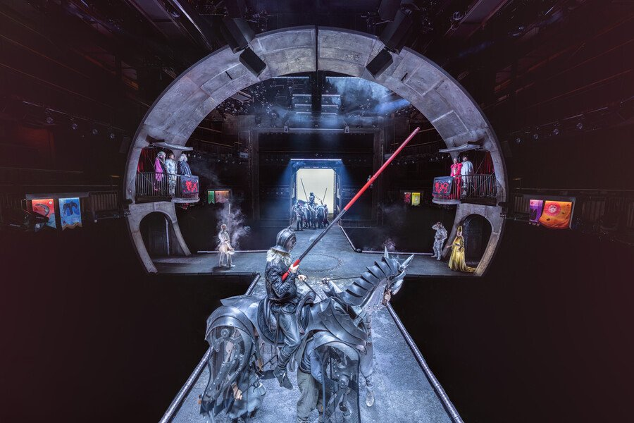
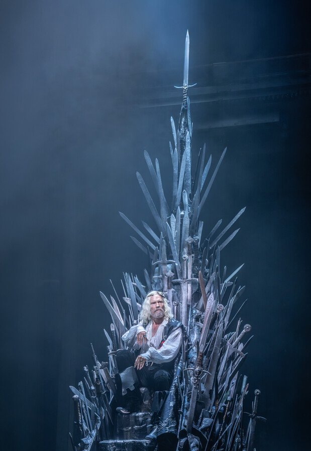

Foto: Divulgação
Foto: DivulgaçãoGil vira musical e o tempo do palco não anda em linha reta
Nesta edição
- 3Biografia pede palcoEditorial
- 4O tempo de Gil não anda em linha retaA semana · Teatro
- 8Recortes: o que disseram na semanaEntre aspas
- 9O pequeno pardal não se arrependeA semana · Teatro
- 14A tenda de Alegría acende outra luzA semana · Show
- 19Na tela: os programas da semanaYouTube do FOYER
- 20Westeros cabe num palco sem efeitos digitaisA semana · Teatro
- 26Feliz Ano Velho aprende a cantarA semana · Teatro Musical
- 31O conde nasceu no palco, não no cinemaA semana · Memória
- 36A semana em cartaz: São PauloAgenda
- 37A semana em cartaz: Rio de JaneiroAgenda
- 38Entre mestres: a arte pela palavraExclusivo
- 39Página patrocinadaPublicidade
- 40ExpedienteQuem faz o FOYER
- 41A cortina desceContracapa
Biografia pede palco
O palco passou a semana ocupado com vidas reais. Em 20 de agosto o Teatro Santander estreia Gil, Andar com Fé, primeira biografia musical de Gilberto Gil, com direção de Miguel Falabella e 34 artistas em cena, Gui Ventura à frente. A dramaturgia de Newton Moreno recusa a linha do tempo: passado, presente e futuro se atravessam, conduzidos por uma figura chamada Tempo-Rei. Moreno, aliás, coassina com Alessandro Toller a Piaf que já está em cartaz no Teatro Bradesco, onde Laila Garin canta o repertório do pequeno pardal até 30 de agosto. E setembro tem endereço marcado: Feliz Ano Velho, o livro que Marcelo Rubens Paiva publicou em 1982, vira musical no Teatro Sabesp Frei Caneca, com Heloísa Périssé no papel de Eunice Paiva.
Lá fora, a Royal Shakespeare Company abriu em 8 de agosto, em Stratford-upon-Avon, a primeira peça do universo de Game of Thrones: três horas e 45 minutos, 36 intérpretes e cavalos em tamanho real movidos por artistas, sem efeitos digitais. Por aqui, o Cirque du Soleil arma a Grande Tenda no Parque Villa-Lobos para a volta de Alegría, também a partir do dia 20.
Até a memória da vez nasceu num palco. Bela Lugosi morreu em 16 de agosto de 1956, e a data redonda de 70 anos cai no domingo seguinte a esta edição. O Drácula dele estreou na Broadway em 1927, três anos antes do filme que fixou seu rosto: o cinema espalhou o conde, mas quem o inventou foi o teatro. Boa leitura.
A direção do FOYER
TeatroFoto — DivulgaçãoO tempo de Gil não anda em linha reta
Gil, Andar com Fé, primeira biografia musical dedicada a Gilberto Gil, estreia em 20 de agosto no Teatro Santander, em São Paulo, com direção de Miguel Falabella, texto de Newton Moreno e temporada até 29 de novembro; Gui Ventura, escolhido em audições que reuniram centenas de candidatos, faz o papel de Gil.
A história começa no exílio em Londres e recusa a cronologia: no palco, a figura de Tempo-Rei aproxima o menino de Ituaçu, o preso da ditadura e o imortal da Academia Brasileira de Letras, num elenco de 34 artistas que também dá corpo a Gal Costa, Elis Regina, Rita Lee e Caetano Veloso.
Primeira biografia musical dedicada a Gilberto Gil chega a São Paulo em 20 de agosto, com Gui Ventura no papel do artista
A vida e a obra de Gilberto Gil chegam ao teatro musical em “Gil – Andar com Fé”, primeira biografia musical dedicada ao cantor, compositor e imortal da Academia Brasileira de Letras. O espetáculo estreia no dia 20 de agosto, no Teatro Santander, em São Paulo, onde fica em cartaz até 29 de novembro.
O tempo de Gil não anda em linha reta
Com direção de Miguel Falabella e texto de Newton Moreno, a montagem tem Gui Ventura no papel de Gil. Ator, cantor e compositor de Santa Luzia, em Minas Gerais, ele foi escolhido após um processo de audições que reuniu centenas de candidatos. Ao seu lado, Guga Barbosa interpreta Tempo-Rei, figura que conduz a narrativa; Henrique Zamith vive Caetano Veloso; e Bel Lima interpreta Flora Gil.
O elenco completo reúne 34 artistas e foi anunciado em 26 de junho, data de aniversário de Gilberto Gil, em um clipe da canção “Palco”, dirigido por Mess Santos. A escolha da data não foi apenas comemorativa: também marcou a apresentação pública do grupo responsável por levar à cena uma trajetória que atravessa música, política, espiritualidade, família, invenção estética e cultura brasileira.
A dramaturgia de Newton Moreno evita a estrutura tradicional das biografias lineares. Em vez de seguir uma ordem cronológica rígida, o espetáculo se organiza a partir de uma percepção de tempo em que passado, presente e futuro se atravessam. A figura de Tempo-Rei funciona como uma espécie de condutor dessa travessia, aproximando diferentes fases da vida de Gil e permitindo que o artista jovem dialogue com aquilo que ainda viria a se tornar.
A história começa no exílio em Londres, mas logo se abre para outros territórios fundamentais da trajetória de Gil: a infância em Ituaçu, na Bahia; a juventude em Salvador; a explosão da Tropicália; a prisão durante a ditadura militar; o retorno ao Brasil; os encontros artísticos que ajudaram a transformar a música popular brasileira; e a consolidação de uma obra que segue em movimento.
O tempo de Gil não anda em linha reta
Em cena, também aparecem figuras decisivas da cultura brasileira, como Gal Costa, Maria Bethânia, Elis Regina, Luiz Gonzaga, Rita Lee e Caetano Veloso. Mais do que reconstruir episódios conhecidos, a montagem propõe olhar para Gil como artista de passagem: alguém que atravessou diferentes épocas sem se fixar em uma única imagem de si mesmo.
Entre as canções já divulgadas estão “Andar com Fé”, “Aquele Abraço”, “Domingo no Parque”, “London, London”, “Tempo Rei”, “Drão”, “Vamos Fugir”, “Palco” e “Toda Menina Baiana”. A produção ainda não divulgou o número total de músicas do espetáculo.
A direção musical é de Thiago Gimenes, com arranjos de Tiago Saul e Ivan de Andrade. As coreografias são assinadas por Leilane Teles e Tiago Dias. A cenografia é de Natália Lana, os figurinos são de Marco Pacheco e Jemima Tuany, a iluminação é de Wagner Pinto e o desenho de som é de Tocko Michellazo. A identidade visual tem assinatura do fotógrafo Gabriel Wickbold.
A estreia integra as comemorações dos dez anos do Teatro Santander, inaugurado em 2016 no complexo JK Iguatemi. Ao ocupar a programação da casa, “Gil – Andar com Fé” se soma a uma sequência recente de grandes musicais biográficos e musicais brasileiros dedicados a nomes centrais da música nacional.
O desafio de contar Gil no palco é justamente não reduzir o artista a uma linha do tempo. Sua obra não cabe apenas na sucessão de discos, prêmios ou datas históricas. Ela atravessa o Brasil como linguagem: mistura festa e pensamento, fé e dúvida, corpo e política, tradição e futuro.
Por isso, a decisão de organizar o musical em torno de um tempo que gira parece menos um recurso formal e mais uma aproximação coerente com o próprio homenageado. Gil nunca foi apenas um artista de uma fase. Foi tropicalista, exilado, ministro, compositor popular, pensador da cultura, voz de celebração e de inquietação. No palco, a proposta é fazer essa multiplicidade cantar.
O tempo de Gil não anda em linha reta
Serviço
Gil – Andar com Fé
Texto: Newton Moreno
Direção: Miguel Falabella
Direção musical: Thiago Gimenes
Arranjos: Tiago Saul e Ivan de Andrade
Coreografias: Leilane Teles e Tiago Dias
Cenografia: Natália Lana
Figurinos: Marco Pacheco e Jemima Tuany
Iluminação: Wagner Pinto
Desenho de som: Tocko Michellazo
Identidade visual: Gabriel Wickbold
Elenco: Gui Ventura, Guga Barbosa, Henrique Zamith, Bel Lima e elenco
Temporada: de 20 de agosto a 29 de novembro de 2026
Local: Teatro Santander — Complexo JK Iguatemi
Endereço: Avenida Presidente Juscelino Kubitschek, 2041 — Itaim Bibi, São Paulo — SP
Sessões:
Quintas e sextas, às 20h
Sábados, às 16h e às 20h
Domingos, às 15h e às 19h
Ingressos: de R$ 25 a R$ 400, conforme o setor
Vendas: Bileto Sympla e bilheteria do Teatro Santander
Benefício: clientes Santander têm 30% de desconto, não cumulativo com meia-entrada
Duração: 2h20, com intervalo de 15 minutos
Classificação indicativa: 12 anos
Recortes da semana
 TeatroFoto — André Wanderley
TeatroFoto — André WanderleyO pequeno pardal não se arrepende
Piaf, Eu Não Me Arrependo está em cartaz no Teatro Bradesco, em São Paulo, com Laila Garin no papel de Édith Piaf, dramaturgia de Newton Moreno e Alessandro Toller, direção de Sergio Módena e temporada até 30 de agosto, de quinta a domingo.
A produção é da Aventura, a mesma casa que pôs Garin na pele de Elis Regina em 2013. No repertório, La Vie en Rose, Milord e Non, Je Ne Regrette Rien, com orquestra de nove músicos sob direção musical de Cláudia Elizeu; Luísa Vianna alterna com Garin no papel-título.
Piaf – Eu Não Me Arrependo estreiou no Teatro Bradesco, em São Paulo, com Laila Garin no papel de Édith Piaf, dramaturgia de Newton Moreno e Alessandro Toller, direção de Sergio Módena e temporada anunciada até 30 de agosto, de quinta a domingo.
A montagem é produzida pela Aventura, casa de Aniela Jordan, Luiz Calainho e Giulia Jordan, a mesma que assinou Elis, A Musical e colocou Garin no papel de Elis Regina em 2013. O espetáculo é apresentado pelo Ministério da Cultura e pela Bradesco Seguros, com apoio da Atlas Schindler, por meio da Lei Federal de Incentivo à Cultura.
O pequeno pardal não se arrepende
O que a montagem conta
A dramaturgia acompanha Édith Piaf (1915-1963) da infância pobre até a consagração mundial, num percurso que o material de divulgação descreve como marcado por muitos amores, pelo envolvimento com a resistência francesa e por diversos problemas de saúde.
Segundo o release da produção, Piaf nasceu em Paris em 19 de dezembro de 1915 e foi criada entre um bordel, uma caravana circense e um bairro de classe trabalhadora. Começou a carreira num cabaré da Champs-Élysées e, em 1935, cantando nas ruas de Pigalle, foi vista por Louis Leplée, dono do Le Gerny's, que a contratou, ensinou a ela as técnicas de palco e a apelidou de La Môme Piaf, o pequeno pardal.
Entre os personagens que sobem ao palco está o boxeador Marcel Cerdan, cuja morte em um acidente aéreo, em 1949, se imprimiu na obra da cantora. Piaf seguiu se apresentando durante a ocupação alemã e consolidou a carreira internacional nos anos 1940, com o primeiro show nos Estados Unidos em 1947.
O repertório e a orquestra
As canções escolhidas reúnem "La Vie en Rose", "Hymne à l'Amour", "Padam, Padam", "Milord" e "Non, Je Ne Regrette Rien", sob direção musical de Cláudia Elizeu, à frente de uma orquestra de nove músicos.
O pequeno pardal não se arrepende
"Contar a história de Piaf em um musical é falar sobre vencer o destino que nos é imposto, mas celebrar a força feminina, a solidariedade e a vida inspiradora de uma mulher que superou todos os desafios e que jamais se arrependeu de suas escolhas", afirma Aniela Jordan, diretora artística da Aventura.
Quem está em cena
Luísa Vianna alterna com Garin no papel-título. Bernardo Berro vive Louis Leplée e Charles Dumont; Bruna Pazinato faz Marlene Dietrich; Claudio Lins interpreta Jean Cocteau; Luciana Ramanzini é Momone. Completam o elenco Erika Riba, Gabriel Vicente, Leonardo Ventura, Martina Blink, Patrick Amstalden, Thiago Marinho, Bruno Ospedal, Carol Lippi, Shantala Marthins, Vitor Veiga e Vinicius Cosant. A coreografia é de Alonso Barros, o desenho de som de Gabriel D'Angelo, o casting de Marcela Altberg e a direção de produção de Bianca Caruso.
Trinta anos de carreira e um reencontro
Baiana de Salvador, nascida em 17 de fevereiro de 1978 e formada em artes cênicas pela Universidade Federal da Bahia, Garin completa 30 anos de carreira. O reconhecimento nacional veio em 2013 com Elis, A Musical, dirigido por Dennis Carvalho, trabalho que lhe rendeu o Prêmio Quem de Teatro naquele mesmo ano e, em 2014, os prêmios Shell, APCA, Bibi Ferreira e Cesgranrio. Depois vieram O Beijo no Asfalto, Gota D'Água a seco], 2 Filhos de Francisco e A Hora da Estrela ou O Canto de Macabéa, adaptação de Clarice Lispector com canções de Chico César. Em 2023, a atriz [retomou o papel de Elis.
O pequeno pardal não se arrepende
A cantora francesa também não é território novo para ela: em 2020, Garin interpretou Piaf em um episódio da série Hebe. O que a atrai na biografada, disse a atriz em julho, é a liberdade com que a francesa conduziu a própria vida.
"Uma artista e uma mulher que escolheu fazer o que quis sem se dobrar às convenções. Não se casou, não teve filhos e comandou a própria carreira. Também era livre sexualmente", disse Laila Garin ao jornal O Globo.
Depois de São Paulo
Do Teatro Bradesco a montagem segue para o Rio de Janeiro. A página do espetáculo na Ingresso.com anuncia temporada no Teatro Riachuelo, na Rua do Passeio, 38, no Centro, entre 10 de outubro e 1º de novembro, com os mesmos horários da temporada paulistana.
Em São Paulo, a casa que recebe a estreia fica no Bourbon Shopping, em Perdizes, e é administrada pela Opus Entretenimento. Neste ano, o mesmo palco recebeu o Tom Jobim Musical, que estreou em junho.
O pequeno pardal não se arrepende
Serviço
Piaf – Eu Não Me Arrependo.
Teatro Bradesco, Rua Palestra Itália, 500, loja 263, 3º piso, Bourbon Shopping São Paulo, Perdizes, São Paulo.
Sessões à venda até 30 de agosto.
Quintas e sextas, às 20h; sábados, às 16h e às 20h; domingos, às 15h. A casa abre uma hora antes de cada sessão.
Duração: 150 minutos, mais 15 minutos de intervalo.
Classificação: 12 anos.
Ingressos do primeiro lote de R$ 50 a R$ 300, conforme o setor; na Uhuu, canal oficial de venda do espetáculo, os valores começam em R$ 25, com parcelamento em até 12 vezes e juros a partir da segunda parcela.
Há meia-entrada nos casos previstos em lei e desconto de 50% para clientes Bradesco e Next, limitado a 260 ingressos.
 ShowFoto — Anne-Marie Forker
ShowFoto — Anne-Marie ForkerA tenda de Alegría acende outra luz
O Cirque du Soleil volta ao Brasil com Alegría, In A New Light, sob a Grande Tenda do Parque Villa-Lobos, em São Paulo, de 20 de agosto a 8 de novembro; depois a montagem segue para o Expotrade, em Curitiba, de 19 de novembro a 13 de dezembro.
Criado em 1994, Alegría foi visto por mais de 14 milhões de espectadores em 255 cidades e passou pelo Brasil entre 2007 e 2008. A releitura, em circulação desde 2019, reúne 54 artistas de diferentes países numa operação com mais de cem profissionais entre elenco e equipe técnica.
Espetáculo chega a São Paulo em agosto, sob a Grande Tenda no Parque Villa-Lobos, e segue depois para Curitiba
O Cirque du Soleil volta ao Brasil com “Alegría — In A New Light”, nova versão de um dos espetáculos mais emblemáticos da companhia canadense. A temporada brasileira começa em 20 de agosto, sob a Grande Tenda, no Parque Villa-Lobos, em São Paulo, onde fica em cartaz até 8 de novembro. Depois, a montagem segue para Curitiba, com apresentações de 19 de novembro a 13 de dezembro, no Expotrade.
A tenda de Alegría acende outra luz
Criado originalmente em 1994, “Alegría” se tornou um dos títulos mais conhecidos do Cirque du Soleil e ajudou a consolidar a identidade visual, musical e acrobática da companhia. A versão original foi vista por mais de 14 milhões de espectadores em 255 cidades, entre 1994 e 2013. No Brasil, a produção passou entre 2007 e 2008 e marcou uma geração de espectadores que teve ali um de seus primeiros grandes encontros com a linguagem do Cirque.
Agora, o espetáculo retorna em uma leitura renovada. “Alegría — In A New Light” mantém os elementos que tornaram a obra reconhecível — a trilha, o universo barroco, a atmosfera entre sonho e decadência —, mas atualiza a dramaturgia, a direção de cena, os números acrobáticos, os figurinos e a estética visual para uma nova geração.
A história se passa em um reino que perdeu seu rei. Enquanto um bobo da corte tenta ocupar o trono, uma juventude inquieta começa a questionar a velha ordem e a provocar uma transformação. No centro da narrativa está a disputa entre poder e renovação, tradição e mudança, decadência e esperança.
Essa oposição talvez explique por que “Alegría” continua funcionando tantos anos depois. O espetáculo não se apoia em uma narrativa complexa, mas em imagens de grande força simbólica: cortesãos em ruína, personagens mascarados, acrobatas que parecem suspender a gravidade, figuras jovens que anunciam outro mundo possível. A alegria do título não aparece como festa simples. Ela surge como resistência diante de um universo que parece ter perdido o rumo.
Como é tradição no Cirque du Soleil, a montagem combina acrobacias, música ao vivo, humor, figurinos de forte impacto visual e uma cenografia pensada para transformar a Grande Tenda em um mundo próprio. O elenco reúne 54 artistas de diferentes países, dentro de uma operação que envolve mais de cem profissionais entre artistas e equipe técnica.
A tenda de Alegría acende outra luz
A trilha sonora é um dos elementos mais reconhecíveis de “Alegría”. O álbum original, lançado nos anos 1990, recebeu indicação ao Grammy em 1995 e segue como um dos registros musicais mais populares da história do Cirque du Soleil. Na nova versão, a música permanece como memória afetiva da obra, mas aparece dentro de uma encenação redesenhada.
Desde sua estreia em 2019, “Alegría — In A New Light” já circulou por diferentes países e foi vista por milhões de espectadores. A proposta não é refazer o espetáculo como peça de museu, mas revisitar um clássico a partir do próprio presente. Por isso, o subtítulo faz sentido: trata-se de olhar novamente para “Alegría”, sob outra luz.
A temporada brasileira também reforça a relação do Cirque du Soleil com o público do país. Depois da passagem da versão original, outras produções da companhia vieram ao Brasil, consolidando uma presença recorrente no calendário de grandes espetáculos internacionais. Em 2026, a volta de “Alegría” aposta justamente nessa memória: um título conhecido, agora reposicionado para quem já viu e para quem vai entrar na tenda pela primeira vez.
Apresentado pela EQI Investimentos, com patrocínio master da Shell, patrocínio gold da Zurich Seguros e do Pátio Batel, e realização da IMM, o espetáculo terá ingressos vendidos pela Eventim e pelas bilheterias oficiais de cada cidade.
Mais do que uma volta nostálgica, “Alegría — In A New Light” chega ao Brasil como um teste interessante de permanência. O espetáculo retorna diferente, mas carregando a mesma pergunta que sempre moveu sua narrativa: o que acontece quando um mundo antigo começa a ruir e uma nova energia tenta ocupar seu lugar?
Serviço — São Paulo
A tenda de Alegría acende outra luz
Cirque du Soleil: Alegría — In A New Light
Apresentação: EQI Investimentos
Patrocínio master: Shell
Patrocínio gold: Zurich Seguros
Realização: IMM
Crédito das fotos: Anne-Marie Forker
Temporada: de 20 de agosto a 8 de novembro de 2026
Local: Parque Villa-Lobos — Grande Tenda / Big Top
Endereço: Avenida Queiroz Filho, 1.315, Bolsão B — Vila Hamburguesa, São Paulo — SP
Sessões:
Quartas e quintas, às 20h
Sextas, às 16h e às 20h
Sábados, às 16h e às 20h, com sessão extra às 12h em datas específicas
Domingos, às 15h e às 19h
Abertura do local: 1 hora antes do show
Duração: 2h15, com 25 minutos de intervalo
Classificação indicativa: livre. Menores de 12 anos devem estar acompanhados dos pais ou responsáveis legais
Capacidade: 2.525 lugares
Acessibilidade: acesso e assentos disponíveis para pessoas com deficiência
Ingressos — 1º lote:
Setores de R$ 480 a R$ 1.430, conforme categoria
Meia-entrada de R$ 240 a R$ 960, conforme categoria
Clientes EQI Investimentos têm 10% de desconto em ingressos do tipo inteira, conforme disponibilidade e regras da venda
Vendas online: Eventim
Bilheteria oficial sem taxa:
Até 16 de agosto: Shopping Vila Olímpia — Rua Olimpíadas, 360, Vila Olímpia
De 17 de agosto a 8 de novembro: Bilheteria Parque Villa-Lobos — Avenida Queiroz Filho, 1.315, Vila Hamburguesa
Serviço — Curitiba
Cirque du Soleil: Alegría — In A New Light
Temporada: de 19 de novembro a 13 de dezembro de 2026
Local: Expotrade
Endereço: Rodovia Deputado João Leopoldo Jacomel, 10454 — Vila Amélia, Pinhais — PR
A tenda de Alegría acende outra luz
Sessões:
Quartas e quintas, às 21h
Sextas, às 16h e às 20h
Sábados, às 16h e às 20h, com sessão extra às 12h30 em datas específicas
Domingos, às 15h e às 19h
Abertura do local: 30 minutos antes do show
Duração: 2h15, com 25 minutos de intervalo
Classificação indicativa: livre. Menores de 12 anos devem estar acompanhados dos pais ou responsáveis legais
Capacidade: 2.525 lugares
Acessibilidade: acesso e assentos disponíveis para pessoas com deficiência
Ingressos — 2º lote:
Setores de R$ 505 a R$ 1.475, conforme categoria
Meia-entrada de R$ 252,50 a R$ 982,50, conforme categoria
Clientes EQI Investimentos têm 10% de desconto em ingressos do tipo inteira, conforme disponibilidade e regras da venda
Vendas online: Eventim
Bilheteria oficial sem taxa:
Até 15 de novembro: Pátio Batel — Avenida do Batel, 1868, Batel, Curitiba
De 16 de novembro a 13 de dezembro: Bilheteria Expotrade — Rodovia Deputado João Leopoldo Jacomel, 10454, Vila Amélia, Pinhais
Na tela
 Programa do FoyerCom Andrea Marquee e Rodrigo Miallaret Vindos de Longe Programa do Foyer
Programa do FoyerCom Andrea Marquee e Rodrigo Miallaret Vindos de Longe Programa do Foyer Coxixo de CoxiaBigorna
Coxixo de CoxiaBigorna Programa do FoyerCom Neusa Romano, Eduardo Leão e Victor Delboni - Vindos de Longe -Programa do Foyer
Programa do FoyerCom Neusa Romano, Eduardo Leão e Victor Delboni - Vindos de Longe -Programa do Foyer Coxixo de CoxiaMIACENA
Coxixo de CoxiaMIACENA Programa do FoyerCom Tiago Barbosa Ópera do Malandro Programa do Foyer
Programa do FoyerCom Tiago Barbosa Ópera do Malandro Programa do Foyer Críticas TeatraisAs Bondosas - Crítica Teatral por Kyra Piscitelli
Críticas TeatraisAs Bondosas - Crítica Teatral por Kyra Piscitelli
TeatroFoto — Crédito: Johan PerssonWesteros cabe num palco sem efeitos digitais
Game of Thrones: The Mad King, primeira peça ambientada no universo de George R. R. Martin, teve abertura oficial em 8 de agosto no Royal Shakespeare Theatre, em Stratford-upon-Avon, com texto de Duncan Macmillan, direção de Dominic Cooke e cerca de três horas e 45 minutos de duração, incluindo intervalo.
Cavalos em tamanho real movidos por artistas, dragões de marionete, fogo e uma estrutura em forma de cruz que avança pelo espaço e cerca partes da ação com o público sustentam a encenação de 36 intérpretes. A crítica britânica foi de cinco estrelas no WhatsOnStage a três no Times e no Financial Times.
Royal Shakespeare Company reúne 36 artistas, reconfigura seu principal teatro e aposta em marionetes, fogo e recursos cênicos para levar o universo de George R. R. Martin ao palco
Como colocar Westeros em um teatro sem simplesmente tentar reproduzir aquilo que a televisão fez com efeitos digitais e orçamentos gigantescos?
Westeros cabe num palco sem efeitos digitais
A Royal Shakespeare Company decidiu responder à pergunta em grande escala. “Game of Thrones: The Mad King”, que teve sua abertura oficial em 8 de agosto, em Stratford-upon-Avon, tem cerca de três horas e 45 minutos de duração, incluindo intervalo, reúne 36 artistas e transforma o Royal Shakespeare Theatre para contar uma história situada antes dos acontecimentos que abriram “Game of Thrones”.
A produção é a primeira peça teatral ambientada no universo criado por George R. R. Martin, que participa como produtor executivo. O texto é de Duncan Macmillan, dramaturgo de “People, Places & Things” e “Every Brilliant Thing”, com direção de Dominic Cooke.
A trama retorna aos últimos anos do reinado de Aerys II Targaryen, o Rei Louco, e passa pelo torneio de Harrenhal, acontecimento decisivo na história de Westeros e diretamente ligado à sequência de eventos que levaria à queda da dinastia Targaryen.
Pelo palco aparecem versões mais jovens de personagens conhecidos do público, entre eles Ned Stark, Robert Baratheon, Jaime e Cersei Lannister, Lyanna Stark e o príncipe Rhaegar Targaryen.
Mas é menos a possibilidade de rever esses personagens e mais a maneira encontrada para materializar Westeros diante da plateia que vem concentrando a atenção da crítica britânica.
Cavalos, dragões e fogo sem efeitos digitais
Para receber “The Mad King”, o Royal Shakespeare Theatre teve sua configuração tradicional alterada. Uma estrutura em forma de cruz avança pelo espaço e coloca partes da ação cercadas pelo público, criando perspectivas diferentes para torneios, confrontos e encontros entre os personagens.
Westeros cabe num palco sem efeitos digitais
Em vez de esconder as limitações do palco, a produção parece assumir justamente aquilo que diferencia o teatro da televisão.
Cavalos em tamanho real são construídos por meio de grandes estruturas manipuladas por artistas, numa solução de marionetes que despertou comparações com “War Horse”. Cães e dragões também ganham forma a partir do puppetry, enquanto fogo, fumaça, grandes portões e uma árvore monumental integram a cenografia assinada por Chloe Lamford.
As primeiras críticas indicam uma recepção majoritariamente positiva, mas não sem ressalvas.
O WhatsOnStage deu cinco estrelas ao espetáculo e destacou sua capacidade de atender aos fãs de George R. R. Martin sem tornar a narrativa inacessível a espectadores menos familiarizados com a extensa mitologia de Westeros.
O Telegraph também recebeu a montagem de forma positiva, com quatro estrelas. Já o Independent, igualmente com quatro estrelas, chamou atenção para a proximidade entre o universo criado por Martin e o teatro de Shakespeare, uma relação particularmente evidente numa produção realizada pela própria Royal Shakespeare Company.
O Guardian reconheceu o impacto das soluções cênicas, mas apontou problemas de ritmo e repetição em determinados momentos, especialmente na primeira parte. A crítica também observou que a experiência tende a ganhar outra dimensão para quem já conhece personagens, famílias e acontecimentos do universo de “Game of Thrones”.
As avaliações mais duras vieram de veículos como o Times e o Financial Times, ambos com três estrelas. Entre as ressalvas aparecem o ritmo, algumas cenas de combate e a dificuldade de transportar para o palco a brutalidade que se tornou uma das marcas da adaptação televisiva.
Westeros cabe num palco sem efeitos digitais
A própria duração entrou na conversa. A produção tem aproximadamente 225 minutos, incluindo intervalo, um tempo que aproxima “The Mad King” das grandes epopeias teatrais e exige do público um investimento consideravelmente maior do que o de um espetáculo convencional.

De Shakespeare a Westeros
A associação entre “Game of Thrones” e a Royal Shakespeare Company pode parecer improvável à primeira vista, mas está longe de ser gratuita.
Westeros cabe num palco sem efeitos digitais
Disputas de sucessão, famílias rivais, ambição, profecias, assassinatos e governantes consumidos pelo próprio poder atravessam tanto Westeros quanto boa parte das tragédias e peças históricas de Shakespeare.
Macmillan e Cooke exploram essa proximidade ao transportar a história para um espaço conhecido justamente por transformar guerras, duelos e quedas de reinos em acontecimentos possíveis diante de uma plateia.
A montagem também chega em um momento estratégico para a própria RSC. A companhia passou por uma reestruturação destinada a reduzir sua base anual de custos em cerca de £2,8 milhões e vem ampliando sua relação com títulos capazes de atrair espectadores para além do público tradicional de Shakespeare.
A estratégia já encontrou um caso emblemático em “My Neighbour Totoro”, sucesso teatral desenvolvido pela companhia a partir do filme do Studio Ghibli.
Com “The Mad King”, a aposta ganha uma dimensão ainda maior. A temporada estava esgotada quando a produção chegou à abertura oficial.
É aí que o experimento se torna particularmente interessante. O verdadeiro teste não é descobrir se um dragão pode existir no palco. O teatro já mostrou inúmeras vezes que pode criar mundos inteiros com madeira, tecido, luz e corpos humanos.
A questão é saber se uma franquia construída para milhões de espectadores diante de uma tela consegue transformar parte desse público em plateia de teatro.
Westeros cabe num palco sem efeitos digitais
Se conseguir, “Game of Thrones: The Mad King” terá encontrado algo mais valioso do que uma versão teatral de Westeros: uma maneira de usar uma das maiores propriedades da cultura pop contemporânea para lembrar que, a poucos metros do público, uma batalha feita de atores, objetos e imaginação ainda pode competir com qualquer efeito digital.
“Game of Thrones: The Mad King” fica em cartaz no Royal Shakespeare Theatre, em Stratford-upon-Avon, até 5 de setembro.
 Teatro MusicalFoto — Divulgação
Teatro MusicalFoto — DivulgaçãoFeliz Ano Velho aprende a cantar
O livro que Marcelo Rubens Paiva publicou em 1982 ganha a primeira versão musical em 19 de setembro, no Teatro Sabesp Frei Caneca, em São Paulo, com temporada até 22 de novembro, direção artística de Gustavo Barchilon e dramaturgia de Marilia Toledo a partir do texto teatral de Alcides Nogueira.
Hugo Bonèmer vive Marcelo, Bruno Garcia acumula Marcelo e Rubens Paiva e Heloísa Périssé faz Eunice Paiva, com sucessos de Legião Urbana, Titãs, Lulu Santos e Barão Vermelho costurando os anos 1980 da história.
Adaptação estreia em setembro com Hugo Bonèmer, Bruno Garcia e Heloísa Périssé no elenco e repertório de Legião Urbana, Titãs, Lulu Santos e Barão Vermelho
Um dos livros mais conhecidos de Marcelo Rubens Paiva vai ganhar pela primeira vez uma versão musical. “Feliz Ano Velho” estreia em 19 de setembro no Teatro Sabesp Frei Caneca, em São Paulo, com direção artística de Gustavo Barchilon e dramaturgia de Marilia Toledo.
A temporada segue até 22 de novembro e terá Hugo Bonèmer como Marcelo Rubens Paiva, Bruno Garcia interpretando Marcelo Rubens Paiva e Rubens Paiva, e Heloísa Périssé como Eunice Paiva.
Feliz Ano Velho aprende a cantar
Completam o elenco Bárbara Sut, Bibi Tolentino, Giselle Lima, Ingrid Gaigher, João Côrtes, Lázaro Menezes, Lia Canineu, Luciano Mallmann, Mateus Ribeiro, Mattilla, Renan Mattos, Sabrina Korgut e Tuna Dwek.
Publicado em 1982, “Feliz Ano Velho” nasceu da experiência vivida pelo próprio Marcelo Rubens Paiva depois do acidente que sofreu em uma lagoa em Campinas e que o deixou tetraplégico. O relato de sua reabilitação se tornou também um retrato da juventude brasileira do início dos anos 1980 e marcou diferentes gerações de leitores.
A obra recebeu diversos reconhecimentos, entre eles o Prêmio Jabuti, e foi traduzida para outros idiomas.
Na nova adaptação, a atmosfera daquela década também chega ao palco por meio da música. O espetáculo reúne sucessos de Legião Urbana, Titãs, Lulu Santos e Barão Vermelho, inserindo parte do repertório que marcou os anos 1980 na narrativa.
Uma nova passagem de “Feliz Ano Velho” pelo teatro
Embora esta seja a primeira versão musical, a história de Marcelo Rubens Paiva já teve uma trajetória importante nos palcos.
Em 1983, apenas um ano depois da publicação do livro, “Feliz Ano Velho” ganhou uma adaptação teatral de Alcides Nogueira, dirigida por Paulo Betti. A montagem reuniu no elenco Denise Del Vecchio, Lilia Cabral, Adilson Barros, Christiane Rando e Marcos Frota.
A dramaturgia assinada agora por Marilia Toledo parte justamente desse texto original de Alcides Nogueira, inspirado no romance de Marcelo Rubens Paiva.
Feliz Ano Velho aprende a cantar
Para a nova versão, Gustavo Barchilon afirma buscar uma linguagem distante da reconstrução histórica convencional dos anos 1980.
“A montagem busca uma linguagem diferente daquela que estamos acostumados a ver nos musicais tradicionais. Com uma estética atemporal, música, texto, imagem e atuação se misturam para contar essa história de um jeito novo”, afirma o diretor.
Segundo Barchilon, figurinos, espaço e linguagem também se afastam de uma reprodução de época para concentrar a atenção nos atores, na palavra e nas relações construídas em cena.
A chegada de “Feliz Ano Velho” ao teatro musical acontece em um momento de renovada projeção da obra de Marcelo Rubens Paiva. O escritor também é autor de “Ainda Estou Aqui”, livro que deu origem ao filme vencedor do Oscar de Melhor Filme Internacional.
No novo espetáculo, integrantes dessa mesma história familiar aparecem sob outra perspectiva. Heloísa Périssé interpreta Eunice Paiva, enquanto Bruno Garcia assume também Rubens Paiva, além de dividir com Hugo Bonèmer diferentes representações de Marcelo Rubens Paiva.
A direção musical, os arranjos e a copistagem são de Carlos Bauzys. A equipe reúne ainda Gabriel Malo na coreografia, Natália Lana na cenografia, Maneco Quinderé no design de luz e Diego Salles na assistência de direção musical. A direção de produção é de Thiago Hofman.
O espetáculo é apresentado pelo Ministério da Cultura e pela Petrobras, com produção da Barho Produções.
Feliz Ano Velho aprende a cantar
Elenco
Hugo Bonèmer: Marcelo Rubens Paiva
Bruno Garcia: Marcelo Rubens Paiva / Rubens Paiva
Heloísa Périssé: Eunice Paiva
Bárbara Sut, Bibi Tolentino, Giselle Lima, Ingrid Gaigher, João Côrtes, Lázaro Menezes, Lia Canineu, Luciano Mallmann, Mateus Ribeiro, Mattilla, Renan Mattos, Sabrina Korgut e Tuna Dwek.
Ficha técnica
Direção artística: Gustavo Barchilon
Direção de produção: Thiago Hofman
Dramaturgia: Marilia Toledo, a partir do texto original de Alcides Nogueira, inspirado no romance de Marcelo Rubens Paiva
Direção musical, arranjos e copistagem: Carlos Bauzys
Cenografia: Natália Lana
Coreografia: Gabriel Malo
Design de luz: Maneco Quinderé
Assistência de direção musical: Diego Salles
Produção: Barho Produções
Apresentação: Ministério da Cultura e Petrobras
Feliz Ano Velho aprende a cantar
Serviço
Feliz Ano Velho
Temporada: 19 de setembro a 22 de novembro de 2026
Local: Teatro Sabesp Frei Caneca
Endereço: Rua Frei Caneca, 569, 7º andar, Consolação, São Paulo
Sessões: sextas-feiras, às 20h; sábados, às 17h e às 20h; domingos, às 15h e às 18h
Capacidade: 600 lugares
Classificação indicativa: 14 anos
Abertura da casa: uma hora antes de cada sessão
Ingressos: pelo site Uhuu, com taxa de serviço, e na bilheteria do Teatro Sabesp Frei Caneca, sem taxa de serviço
Bilheteria: terça-feira a domingo, das 12h às 15h e das 16h às 19h. Fechada às segundas-feiras.
 MemóriaFoto — Bela Lugosi em cartão-postal de…
MemóriaFoto — Bela Lugosi em cartão-postal de…O conde nasceu no palco, não no cinema
Bela Lugosi morreu em 16 de agosto de 1956, há 70 anos; seu Drácula estreou na Broadway em 5 de outubro de 1927, no Fulton Theatre, e somou 261 apresentações, mais de três anos antes de o filme da Universal chegar aos cinemas, em fevereiro de 1931.
O húngaro de Lugos decorou foneticamente seu primeiro papel em inglês, em 1922, sem falar a língua. Foi no texto de Hamilton Deane e John L. Balderston que nasceu o conde suave e charmoso que o romance de Bram Stoker não tinha.
Bela Lugosi morreu de ataque cardíaco em Los Angeles, em 16 de agosto de 1956, aos 73 anos. São 70 anos em 2026. O rosto que sobrou dele é o do Conde Drácula, e a imagem que circula é quase sempre a do filme de 1931.
O conde dele começou antes disso, e num palco. Dracula estreou na Broadway em 5 de outubro de 1927, no Fulton Theatre, na rua 46, com Lugosi no papel-título. O filme da Universal só chegaria em fevereiro de 1931. A ficha do Playbill Vault registra 261 apresentações até 19 de maio de 1928, adaptação de Hamilton Deane e John L. Balderston, produção de Horace Liveright e direção de cena de Ira Hards.
O conde nasceu no palco, não no cinema
De Lugos até um teatro da rua 46
Ele nasceu Béla Ferenc Dezső Blaskó em 20 de outubro de 1882, em Lugos, então na Hungria e hoje Lugoj, na Romênia. O nome artístico saiu da cidade. Estudou na academia teatral de Budapeste e estreou nos palcos húngaros no começo do século 20. Rodou companhias de repertório antes de entrar para o Teatro Nacional da Hungria, onde ficou de 1913 a 1919. A trajetória está no verbete do International Dictionary of Films and Filmmakers e no verbete biográfico da Gale, os dois no Encyclopedia.com.
Deixou o país em 1919, trabalhou em filmes alemães e desembarcou nos Estados Unidos em 1921. Resolveu o problema da língua do jeito mais teatral possível: montou em Nova York uma companhia de repertório com artistas húngaros emigrados.
A estreia americana em inglês veio em The Red Poppy, no Greenwich Village Theatre. Foram 13 apresentações, de 20 a 30 de dezembro de 1922, com Lugosi no papel de Fernando, conforme o Playbill Vault. Ele não falava inglês e decorou o texto foneticamente, palavra por palavra, conta o Daily News Hungary. O verbete biográfico da Gale põe o episódio na mesma peça. Foi cinco anos antes de Dracula.
O conde nasceu no palco, não no cinema
O palco veio primeiro, e o conde suave nasceu nele
A peça não nasceu em Nova York. Hamilton Deane adaptou o romance de Bram Stoker para o palco, e a montagem inicial subiu em 1924 no Grand Theatre, em Derby, na Inglaterra, conforme o banco de dados Theatricalia. John L. Balderston reescreveu o texto de Deane para a temporada nova-iorquina.
O que essa versão fixou não estava no livro.
"O conde da montagem britânica original era suave e charmoso, uma concepção de Drácula que não está no romance original", escreveu o curador John Oliver no site do British Film Institute, em tradução da redação.
O catálogo do American Film Institute é direto quanto à ordem dos fatos: Lugosi criou o papel no palco, na estreia americana de 5 de outubro de 1927, e o cinema veio atrás. Lon Chaney era o primeiro escolhido para o filme e morreu em 1930. Dracula, de Tod Browning, estreou em 14 de fevereiro de 1931 e custou 341.191,20 dólares, valor de um cronograma de produção citado pelo AFI. Lugosi ficou com o espetáculo por três anos, um na Broadway e dois em turnê, registra o verbete da Gale.
O conde nasceu no palco, não no cinema
O texto sobreviveu ao ator
Dois meses depois da estreia do filme, a mesma peça voltou à Broadway sem ele. A remontagem do Royale Theatre abriu em 13 de abril de 1931, com Courtney White como o conde, e fechou em 30 de abril. Foram oito apresentações.
O texto de Deane e Balderston teve destino melhor que o do ator. Em 20 de outubro de 1977 ele voltou à Broadway, no Martin Beck Theatre, com Frank Langella no papel-título, cenário e figurinos de Edward Gorey. Ficou em cartaz até 6 de janeiro de 1980 e levou dois Tony em 1978, o de produção mais inovadora de um revival e o de figurino, para Gorey. Foram 925 apresentações, contra as 261 de Lugosi.
O texto continua no catálogo de licenciamento da Concord Theatricals, que lista Dracula com três nomes na capa: John L. Balderston, Hamilton Deane e Bram Stoker.
Com o ator a conta foi outra. Depois do filme, ele passou a ser chamado sempre para o mesmo tipo de papel. O verbete de Anthony Ambrogio no International Dictionary of Films and Filmmakers dá o tamanho da queda: depois de 1933, a única aparição de Lugosi num filme de primeira linha foi uma ponta de uma cena em Ninotchka.
Em São Paulo, o conde chegou por outros textos
A cidade viu dois Dráculas em dois anos, e cada um deles chegou por um texto diferente.
O conde nasceu no palco, não no cinema
Drácula – Um Terror de Comédia tem texto de Gordon Greenberg e Steven Rosen. A ficha divulgada pela Palco 7 Produções apresenta a peça como uma comédia em temporada no Off-Broadway e traz tradução e adaptação de Bruno Narchi, direção de Ricardo Grasson e Heitor Garcia e Tiago Abravanel no papel do conde. A temporada ocupou o Teatro Bravos entre agosto e outubro de 2025.
Drácula – O Musical veio por outro caminho ainda. O espetáculo da Segundo Ato Entretenimento tem texto e versões de Ella Dalcin, direção de Glaucia da Fonseca e Nando Pradho como Drácula, com canções compostas por Di Angelo Mathias, Leopardo e Paula Souza Lima, segundo a resenha da Rolling Stone Brasil. Estreou em junho de 2026 no Teatro das Artes e teve mais duas sessões em julho, nos dias 14 e 28.
Nenhuma das duas fichas divulgadas cita Deane ou Balderston, e a redação não localizou o documento de licenciamento de nenhuma das montagens. A filiação exata de cada texto fica sem confirmação aqui.
O papel que ele criou num teatro da rua 46 ficou maior que o ator, e nunca mais soltou. Seguiu em cartaz muito depois de 1956, inclusive em São Paulo, em textos que Lugosi nunca leu.
A semana em cartazSão Paulo
A semana em cartazRio de Janeiro

Quem faz
- Pedro Amaral · Direção e edição
- Isabel Branquinha · Direção e edição
Fotografias
Imagens de divulgação das produções, sempre com crédito.
Cartas da plateia
Escreva para programafoyer@gmail.com. As melhores cartas saem na revista, com nome e cidade.
Fale conosco
foyer.digital · programafoyer@gmail.com · YouTube @Foyer.digital
No site todos os dias ou na revista: página inteira, meia página, cortina de entrada, entreato e cartaz. Contrate em 5 passos: foyer.digital/anuncie · programafoyer@gmail.com
Esta edição é dos assinantes até amanhã.
Capa, sumário e carta são de casa aberta. O resto abre para todo mundo na sexta. Assinante lê tudo hoje, de graça.